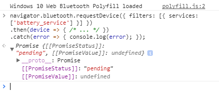

What is a promise?
A Promise is an object representing the eventual completion or failure of an asynchronous operation. A promise may be created using its constructor. However, most people are consumers of already-created promises returned from functions
Essentially, a promise is a returned object to which you attach callbacks, instead of passing callbacks into a function.
Real Time Example
Imagine you are a kid. Your mom promises you that she'll get you a new phone next week."
You don't know if you will get that phone until next week. Your mom can either really buy you a brand new phone, or stand you up and withhold the phone if she is not happy
That is a promise. A promise has 3 states. They are:
Promise is pending: You don't know if you will get that phone until next week.
Promise is resolved: Your mom really buy you a brand new phone.
Promise is rejected: You don't get a new phone because your mom is not happy.
Example
Old-style function that expects two callbacks, and calls one of them on eventual completion or failure:
function successCallback(result) {
console.log("It succeeded with " + result);
}
function failureCallback(error) {
console.log("It failed with " + error);
}
doSomething(successCallback, failureCallback);
Modern functions return a promise you can attach your callbacks to instead:
let promise = doSomething();
promise.then(successCallback, failureCallback);…or simply:
doSomething().then(successCallback, failureCallback);
Why Promises:
Unlike old-style passed-in callbacks, a promise comes with some guarantees:
- Callbacks will never be called before the completion of the current run of the JavaScript event loop.
- Callbacks added with .then even after the success or failure of the asynchronous operation, will be called, as above.
- Multiple callbacks may be added by calling .then several times, to be executed independently in insertion order.
Promises in Web Bluetooth API:
navigator.bluetooth.requestDevice({ filters: [{ services: ['battery_service'] }] })
.then(device => { /* ... */ })
.catch(error => { console.log(error); });
In this requestDevice() will return a device promise which will have device info. Similarly it have many methods like getService(), getCharacteristic() etc which will return promises.
We can check the promiseStatus, promiseValue in console of browser.

Reference Links: